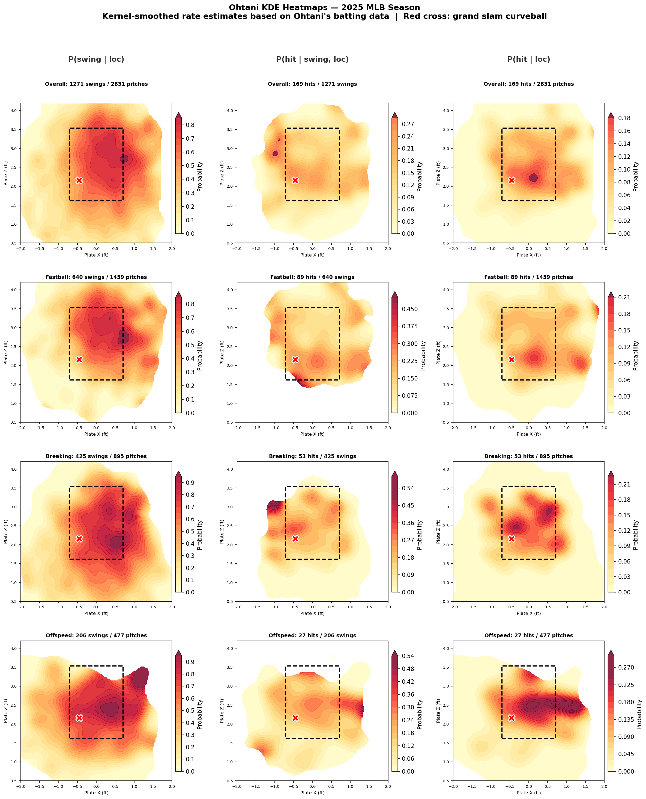
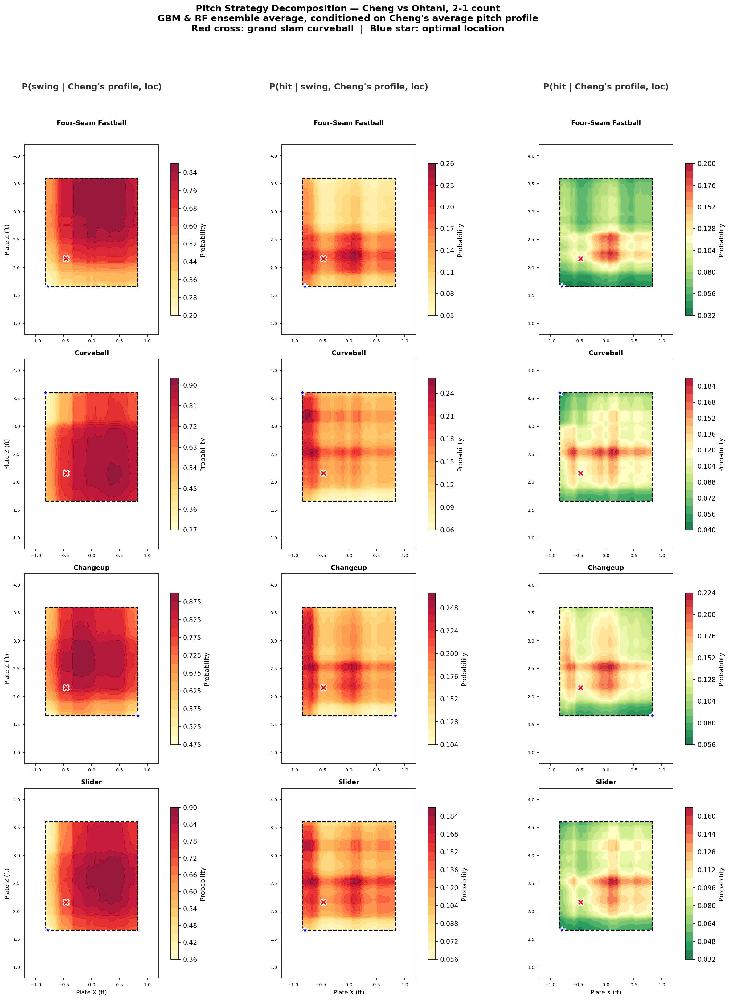
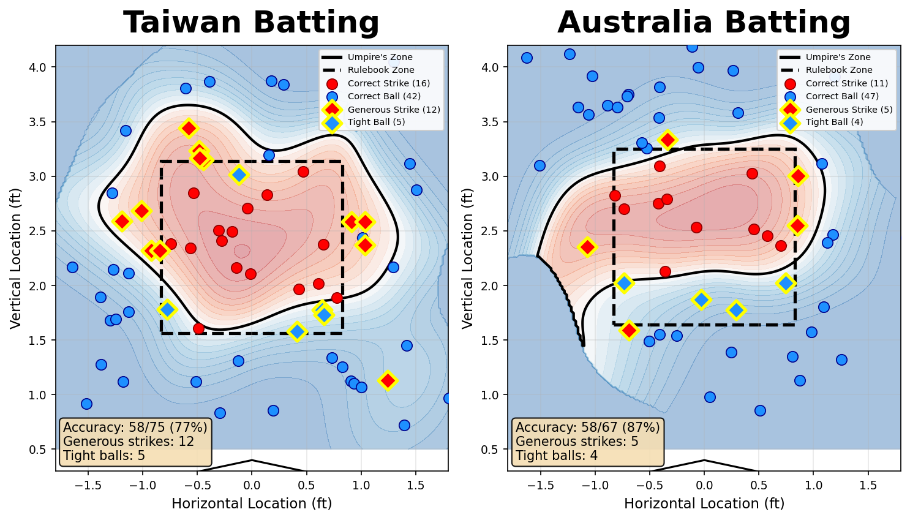
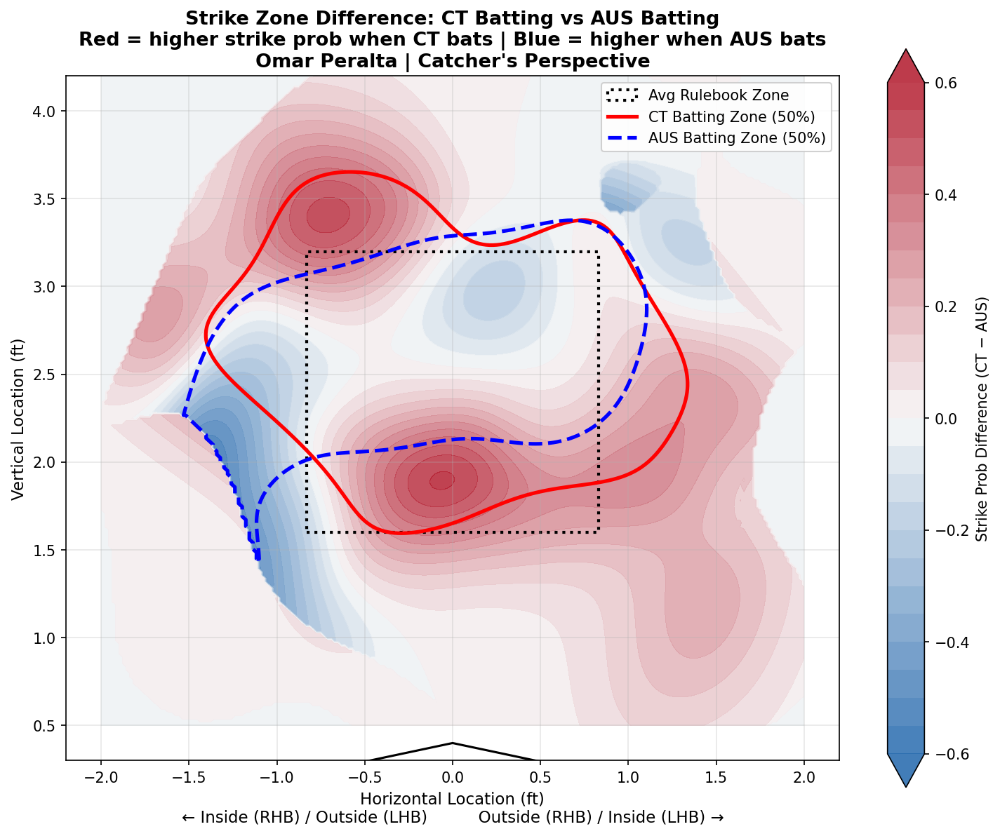

I'm Ming-Ju (Luke) Chuang — a statistician with a lifelong passion for baseball. I combine machine learning, spatial statistics, and domain knowledge to uncover insights hidden in pitch-level data.
I grew up watching baseball in Taiwan, and it has shaped how I think about uncertainty, strategy, and decision-making. When Team Taiwan won the 2024 Premier 12 championship, it was a turning point — I realized I could channel both my passion for the game and my statistical training into something meaningful.
During the 2026 World Baseball Classic, I couldn't just watch. I pulled pitch-level data, built probabilistic models, and published analyses that dissected everything from umpire bias to Shohei Ohtani's hitting profile. I want to bring this level of rigor to every game I study.
I hold an M.S. in Statistics and Data Science from National Tsing Hua University and will begin a Ph.D. in Statistics at the University of Michigan in Fall 2026. My undergraduate research included virtual reality training for baseball players and sports audience behavior analytics.
From raw pitch data to actionable insights — here's the analytical toolkit I bring to baseball.
Real analyses from real games — where data meets the diamond.
Japan scored 10 runs in the 2nd inning, including a grand slam by Shohei Ohtani. Was starter Hao-Chun Cheng truly to blame? I used pitch-level data and ML models trained on Ohtani's entire 2025 MLB season to answer two questions: did Cheng pitch poorly? and could he have pitched Ohtani better?

KDE-based rate estimates from Ohtani's 2025 MLB season. Rows: pitch categories (Overall, Fastball, Breaking, Offspeed). Columns: P(swing|loc), P(hit|swing,loc), P(hit|loc). Red cross = Cheng's grand slam curveball location.

Optimal pitching strategy conditioned on Cheng's pitch profile. Red cross = actual location; blue star = model-recommended optimal location for each pitch type.
After Taiwan's dramatic game against Australia, I reconstructed the home plate umpire's practical strike zone using kernel density estimation on 142 called pitches. The results revealed a striking asymmetry — the zone expanded dramatically when Taiwan batted and collapsed when Australia batted.

KDE-estimated practical strike zone (shaded) vs. rulebook zone (dashed). Left: expanded zone when Taiwan bats. Right: collapsed zone when Australia bats.

Difference map: red = higher strike probability when Taiwan bats; blue = when Australia bats. Red dominates, confirming systematic bias.
"Baseball is full of probability battles. A pitch with a 9% hit probability gets crushed for a grand slam... You can only say that Ohtani is simply that incredible."
— from my Taiwan vs. Japan analysis
Looking for a passionate analyst who can turn pitch data into strategic insights? Let's connect.